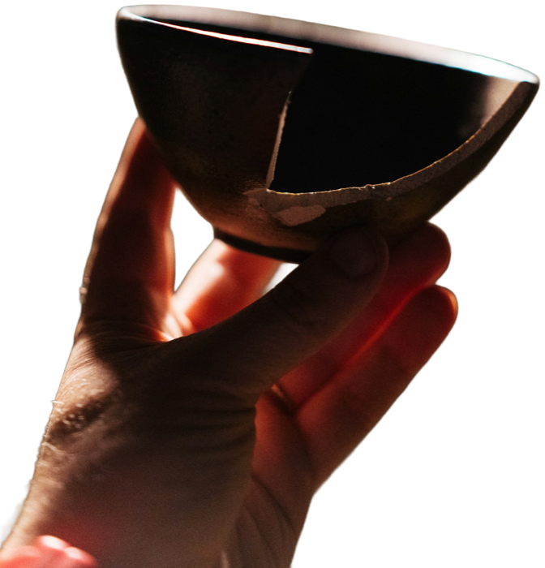

Moverse - Comer - Descansar - Sentir
DESCARGAR EL LIBRO (PDF)Vivimos rodeados de cuerpos editados, rutinas imposibles y dietas que prometen cambiarlo todo en 21 días. La salud se volvió una competencia, y en esa competencia casi todos sentimos que vamos perdiendo.
El wabi-sabi propone otra mirada. Es una forma japonesa de entender la belleza que valora lo sencillo, lo natural y lo incompleto: la taza de cerámica con una grieta, la madera gastada por el uso, la hoja que cambia de color en otoño. Si llevamos esa idea al cuidado del cuerpo, aparece algo liberador: no necesitas una vida perfecta para estar sano. Necesitas una vida posible.
La constancia imperfecta le gana siempre a la perfección abandonada.
Lo que transforma la salud no son los grandes esfuerzos aislados, sino las acciones pequeñas que se repiten. Caminar un rato cada día hace más por tu corazón que una semana intensa de gimnasio seguida de tres meses de nada.
El mejor ejercicio es el que puedes repetir.
03Menos reglas, más comida de verdad.
04Pocos ingredientes, mucho sabor.
05El cuerpo también se construye en la pausa.
En Japón, cuando una pieza de cerámica se rompe, a veces se repara con laca y polvo de oro. La grieta no se esconde: se vuelve la parte más bonita del objeto.
Las líneas doradas de esta página te lo recuerdan: tus pausas y tus días flojos también son parte del camino.
Nada dura, nada está terminado, nada es perfecto.